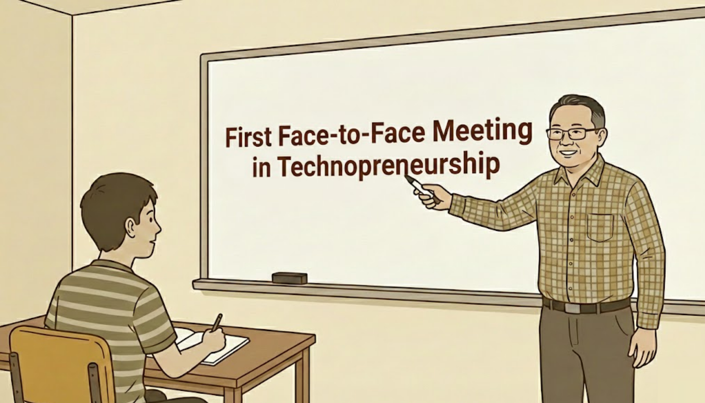

My Takeaways from Our First Face-to-Face Technopreneurship Meeting

The first time I encountered the word technopreneurship was not in a classroom or during a lecture, but while I was browsing my course prospectus before even taking the entrance examination at this university. At that time, I was still deciding whether I truly wanted to pursue a degree in Information Technology, with a major in Business Technology Management. Among the list of subjects, Technopreneurship immediately stood out to me. It sounded familiar, slightly intimidating, yet exciting. As someone who had always been curious about technology, I expected this subject to focus on how innovative technologies are developed and transformed into real-world products.
What intrigued me most was the idea that technopreneurship might bridge two worlds I found equally fascinating: technology and business. I was eager to learn how systems are built, how software works behind the scenes, and how technological solutions are applied in business environments. At the same time, I wanted to understand how these technologies matter beyond code editors and classrooms—how they solve problems, improve processes, and affect people’s daily lives. Back then, I believed that technopreneurship would teach me a structured way of creating “great ideas,” almost as if innovation itself could be taught step by step.
Fast forward to my first year in the university, after a challenging and demanding first semester as a BSIT student, I finally found myself officially taking Technopreneurship in the second semester. By this point, I had already experienced the realities of university life—tight deadlines, the environment of a state university, and the discipline required to survive and grow in college. Entering this subject, I carried the same expectation I had months before: that technopreneurship would show me how to develop innovative ideas and successful technological concepts.
However, as I began to understand the course’s direction and reflect on its purpose, I slowly realized that my initial assumption was incomplete. Technopreneurship is not a subject that simply hands out ideas or teaches creativity in a formulaic way. In fact, the subject itself is not what creates innovation—it is the mindset that it encourages. The responsibility for identifying problems, thinking critically, and developing meaningful solutions does not come solely from the course, but from how we, as students, observe the world around us and respond to the challenges we encounter.
What I Initially Thought Technopreneurship Was
Before taking the subject, I had a very simplified understanding of technopreneurship. I assumed it was mainly about coming up with unique ideas, creating applications or systems, and eventually turning them into successful products or businesses. In my mind, innovation was closely tied to output, something you could clearly see, present, and evaluate. If an idea looks impressive or uses advanced technology, it must be innovative.
As I reflected more on the nature of technopreneurship, I began to understand that learning in this subject goes beyond listening to lectures or memorizing concepts. Technopreneurship is not confined to a classroom setting. Instead, it requires students to be aware, observant, and engaged with the world outside the university.
Unlike traditional subjects where learning often follows a linear structure—lesson, example, quiz—technopreneurship demands a different approach. It encourages students to question existing systems, notice inefficiencies, and think critically about everyday experiences. In this sense, technology becomes a tool rather than the center of innovation. The real challenge lies in identifying meaningful problems and understanding the context in which they exist.
This perspective helped me realize that innovation cannot be forced. It does not come from waiting for instructions or copying existing ideas. Instead, it emerges from curiosity, empathy, and the willingness to explore unfamiliar situations. As an IT student, this shift in thinking is important. It reminds me that technical skills alone are not enough. Without purpose and understanding, technology loses its impact.
First Impressions of our Professor
From the first face-to-face meeting, I immediately noticed that our professor has a commanding presence in the classroom. There's a certain strictness in the way instructions are given and expectations are set, which makes it clear that accountability is important in this course. At the same time, he has a good sense of humor that occasionally breaks the tension, as when he shared personal anecdotes from his industry experience or joked about the challenges of working on real projects. These moments made the class feel more approachable without diluting the seriousness of the lessons.
What struck me most was how direct and experience-driven his approach is. There's no sugarcoating reality; he talks about successes and failures alike, which gives the lessons an authenticity that textbooks alone can't provide. Even when the delivery can feel intense at times, it's motivating; it reminds me that learning in Technopreneurship is not just about completing assignments but about thinking critically and preparing for the kinds of challenges professionals face in the real world. This balance of humor, strictness, and practicality made a strong impression on me as a first-year BSIT student and set the tone for the course.
Understanding Technopreneurship Beyond the Term
Before this course, I viewed technopreneurship mainly as a combination of two words: technology and entrepreneurship. While that definition is technically correct, it barely scratches the surface. During our first meeting, I began to understand that technopreneurship is more about value creation than invention itself.
Technology alone does not automatically create impact. A system, application, or platform only becomes valuable when it addresses a genuine need. This realization helped me reflect on how often people focus too much on technology's complexity rather than its purpose. We sometimes get caught up in features, frameworks, or trends, forgetting to ask the most important question: Who does this help, and how?
Technopreneurship encourages us to reverse that mindset. Instead of starting with "What can I build?", we are challenged to ask, "What problem exists, and how can technology help solve it?" This subtle but powerful shift changes how ideas are formed. It emphasizes relevance, sustainability, and impact rather than novelty alone.
Even now, I find myself relating to this. As a BSIT student, I often catch myself thinking first about what programming language or framework I should use, rather than pausing to consider what problem I am actually trying to solve. Technopreneurship has helped me realize that choosing the right tools is secondary; understanding the problem and the impact of the solution must come first. It's a lesson I am still learning, but one that already changes how I approach both class projects and personal experiments in coding and technology.
Accountability
One of the most important takeaways from our first face-to-face meeting was the emphasis on accountability. Unlike traditional subjects,, where performance is mostly measured through exams or quizzes, technopreneurship places the responsibility on the student to be proactive. The success of learning in this course depends heavily on how much effort we put into understanding our environment and engaging with real-world issues.
This made me reflect on my role as a student—not just as someone who receives information, but as someone responsible for applying it. Accountability in this context means being attentive, asking questions, participating in discussions, and taking ownership of one’s learning process. The subject does not spoon-feed answers; instead, it challenges us to think independently.
As a first-year BSIT student, this realization was both intimidating and empowering. It reminded me that learning in college is not about doing the bare minimum but about developing habits that will shape how we approach problems in the future. Technopreneurship, in this sense, mirrors real-life scenarios in which solutions are not provided and initiative matters.
Mindset
Another key takeaway from the first meeting was the idea that innovation starts with mindset, not technology. This was a surprising realization for me because, as an IT student, I initially believed that innovation primarily came from technical expertise. While skills are important, the course highlighted that mindset determines how those skills are used. Innovation requires curiosity, empathy, and critical thinking. It involves noticing inefficiencies, understanding user needs, and questioning existing systems. These are not skills that can be learned overnight or through memorization. They are developed through experience, reflection, and continuous learning.
This lesson resonated with me because it reframed how I view my growth as a student. Instead of focusing solely on becoming technically proficient, I now see the importance of becoming more observant and reflective. Technopreneurship encourages us to look beyond assignments and see technology as a tool for meaningful change.
My Perspective on Technopreneurship as a BSIT student
As a BSIT student majoring in Business Technology Management, this course feels especially relevant. Our field already sits at the intersection of technology and business, and technopreneurship further strengthens that connection. It reinforces the idea that IT professionals are not just programmers or system builders, but problem solvers, decision-makers, and innovators who must constantly balance technical feasibility with real-world applicability. The course challenges us to think not only about how a system works, but also why it matters, who it impacts, and how it can create value beyond its functional purpose.
The first face-to-face meeting helped me realize that technopreneurship aligns closely with the realities of the IT industry. In real-world settings, technical solutions must not only function correctly but also align with business goals, address user needs, and account for resource constraints such as time, budget, and infrastructure. Projects in the IT industry rarely exist in a vacuum; they must consider usability, scalability, and the broader impact on stakeholders. Understanding this early in our academic journey gives us a clearer picture of what lies ahead and how the knowledge we gain in school can be applied effectively in professional environments.
Beyond practical application, this subject pushes us to adopt a long-term perspective. Unlike courses that emphasize short-term performance—such as exams, reports, or assignments—technopreneurship encourages us to think about impact, sustainability, and growth. It asks us to reflect not only on what can be built now, but also on what can continue to evolve, improve, and benefit communities over time. These are perspectives that will remain valuable even beyond college. As a first-year BSIT student, internalizing this mindset feels like a step toward understanding what it truly means to be a technology professional: someone capable of thinking holistically, anticipating future challenges, and crafting solutions that are as thoughtful as they are functional. Finally, this course reminds me that the BSIT journey is more than technical skills; it is a journey toward developing judgment, responsibility, and strategic thinking. Technopreneurship is a lens through which we learn to connect coding, systems design, and business strategy with the real problems people face every day. This connection makes the subject feel not only relevant but essential for any IT student who wants to leave a meaningful mark in the industry.
My Perspective on Technopreneurship as a BSIT student
Looking back, my understanding of technopreneurship has changed significantly from when I first encountered the subject in the prospectus. What I once believed was a course on generating great ideas turned out to be something deeper and more meaningful. Technopreneurship is not about the subject itself producing innovation; it is about developing a mindset that encourages critical thinking, observation, and responsibility. This reflection helped me recognize my assumptions, limitations, and areas for growth as a first-year BSIT student. It reminded me that learning does not depend solely on physical presence but on willingness, accountability, and engagement. More importantly, it taught me that technology is only powerful when used with purpose.
Looking ahead, I recognize that developing the ability to generate ideas and create meaningful concepts will take time and deliberate effort. I carry with me the lessons that technopreneurship has begun to teach. Innovation does not start with code or tools; it starts with awareness, curiosity, and the courage to address real problems. Whether through this subject, future projects, or other experiences outside the classroom, I hope to further improve my capacity to identify problems, think critically, and propose solutions that matter. I know this will not happen overnight, and I will inevitably face challenges along the way—but that is part of the learning process. Our professor's direct guidance, coupled with the lessons drawn from his experience, encourages me to continuously reflect, adapt, and strive for growth. Over time, I believe that by combining the lessons from Technopreneurship with practical exposure and persistence, I will be able to develop concepts and solutions that are not only innovative but also impactful.